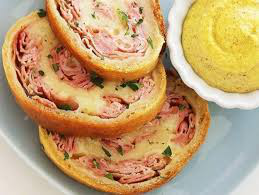
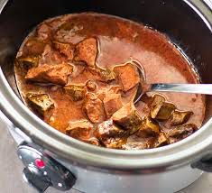
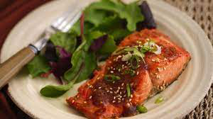
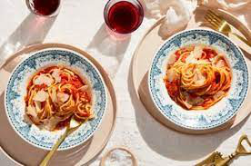

Jamon horneado y queso rollups
Ingredientes
- 1 bola de masa de pizza
- 8 onzas de jamón delicatesse en rodajas finas
- 1 taza de queso mozzarella rallado
- Para servir, opcional:
- Perejil fresco para espolvorear
- Salsa de mostaza o rábano picante
Elaboración paso a paso
- Precaliente el horno a 400 grados F. Enrolle la masa de pizza en una superficie ligeramente
enharinada. Presione para formar un rectángulo de 12 x 8 pulgadas.
- Coloque las lonchas de jamón uniformemente sobre la masa a menos de 1/2 pulgada de los
bordes. Espolvorear uniformemente con queso. A partir de uno de los extremos cortos,
enrollar la masa para formar el registro. Pellizcar la costura juntos para sellar. Colocar,
cosiendo hacia abajo, sobre una hoja de hornear engrasada.
- Hornear durante 50 minutos, o hasta que se doren en el dorado profundo. Dejar reposar 10
minutos antes de cortar en 8 rodajas con un cuchillo dentado. Servir con mostaza o salsa de
rábano picante, si se desea.

Coccion lenta salsa de pollo

Ingredientes
- 4 pechugas de pollo deshuesadas y sin piel
- 2 tazas de salsa favorita
- Sal
- Pimienta
Elaboración paso a paso
- Coloca las pechugas de pollo en una olla lenta y cúbrate con salsa. Lanar hasta que el pollo
esté cubierto.
- Cubrir y cocinar en alto durante 4 horas (o bajo durante 6-8 horas), o hasta que el pollo se
ramente fácilmente con un tenedor. Triturar el pollo en la olla lenta y se lad con la salsa
y los jugos restantes hasta que estén bien mezclados. Servir inmediatamente, o refrigerar en
un recipiente hermético por hasta 5 días. (este pollo también se congela bien.)
- Realmente puedes usar casi cualquier corte de pollo para esta receta. Sin embargo, para
triturar fácilmente (para que no tenga que meterse con los huesos), recomiendo pechugas de
pollo o muslos deshuesados. Esto debe ser aproximadamente 2 libras de pollo en total.
Salmon asado tailandes
Ingredientes
- 6 x 6 oz de piel de filetes de salmón salvaje
- Pizca de sal
- 1/2 taza + 2 cucharadas de salsa de chile dulce tailandés dividida
- 2 - 3 cucharadas de cebollas verdes finamente picadas
- Spray de cocina que uso mixto
Elaboración paso a paso
- Hacer salsa de chile dulce tailandés. En un plato grande para hornear, agregue el salmón en
una sola capa. Cada filete: espolvorear con una pizca de sal y tapar con 1 cucharada de
salsa de chile dulce tailandés. Cepille o frote con los dedos para recubrir el pescado con
salsa uniformemente en la parte superior, inferior y laterales. Cubrir y dejar marinar en la
nevera durante al menos 2 horas o durante la noche es lo mejor (hasta 24 horas).
- Encienda el pollo de engorde del horno en Alto y coloque el estante superior del horno 5 "-
6" por debajo de la fuente de calor. Forme una hoja de hornear grande con papel de aluminio
o estera de silicona, rocíe con spray de cocina y coloque los filetes de salmón de la piel
hacia abajo (si los hay). Abrigo con adobo restante del plato (si lo hay).
- Asar durante 8 minutos, rotando la hoja de hornear una vez. Retiramos del horno y cepillamos
la parte superior de cada filete con 2 cucharaditas de salsa de chile dulce tailandés.
Volver al horno y asar durante otros 5 minutos o hasta que el salmón se haya caramelizado.
Servir caliente aderezado con cebollas verdes, salsa extra (si se desea) y arroz integral o
quinua + cualquier ensalada.

Ensalada Griega Con Queso Feta

Ingredientes
- 2 libras de tomates frescos y maduros, preparados como se describe a continuación, o 2 tazas
de tomates italianos importados en conserva, cortados, con su jugo.
- 5 cucharadas de mantequilla
- 1 cebolla mediana, pelada y cortada por la mitad
- Sal al gusto
- Tomates de ciruela frescos y maduros
Elaboración paso a paso
- Ponga los tomates frescos preparados o los enlatados en una cacerola, agregue la
mantequilla, la cebolla y la sal, y cocine al descubierto a fuego lento, pero constante
durante unos 45 minutos, o hasta que se espese a su gusto y la grasa flote libre del tomate.
Revuelva de vez en cuando, triturando cualquier trozo grande de tomate con el lomo de una
cuchara de madera.
Sabor y corrección para la sal. Antes de lantar con pasta, puedes quitar la cebolla (como
recomienda Hazan) y guardarla para otro uso, pero muchos optan por dejarla. Servir con queso
parmigiano-reggiano recién rallado para la mesa.
Huevos horneados en tapas de setas Portobello
Ingredientes
- Huevos frescos de granja
- Tapas de setas portobello
- Rodajas de jamones
- Pimienta
- Perejil fresco o tomillo
- Un poco de aceite de oliva
Elaboración paso a paso
- Limpie las tapas de setas portobello con un paño húmedo, retire el tallo y raspe las
branquias para que tenga un pozo lo suficientemente profundo para el huevo.
- Frote un poco de aceite de oliva en la parte exterior de la seta para ayudarla a cocinar y
evitar que se pegue a la sartén. Coloque las tapas en una hoja de hornear.
- Coloque una rebanada de jamón dentro de la tapa de la seta.Portobello Mushrooms with
Prosciutto
- Agrieta cada huevo en un tazón pequeño y luego deslízalo cuidadosamente sobre una tapa de
champiñones llena de jamón.Paleo Baked Eggs.
- Espolvorear con pimienta negra y hierbas frescas de elección – Usé perejil, pero el tomillo
también sería genial. (El jamones es salado, así que no recomiendo agregar más).
- COLOQUE CUIDADOSAMENTE la bandeja de hornear en el horno precalentado de 375 grados F y
hornee durante 20-30 minutos. La cantidad de tiempo requerido depende de qué tan gruesos son
sus hongos y qué tan hecho le gustan sus huevos.